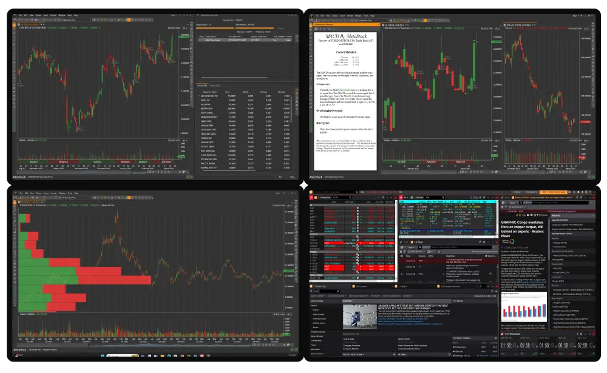

Real-Time Charting & Market Scanning Software for Active Traders
MetaStock R/T is specifically designed for real-time traders who use intra-day data to transact in real-time throughout the trading day.
Powered by MetaStock XENITH Real-Time Market Data and News, MetaStock R/T boasts up-to-the-tick real-time charts.*

With MetaStock R/T, you can
- Chart just about any market security
- Layout your charts across a single screen or multiple monitors
- Scan the market to identify current opportunities based on your criteria
- Backtest your strategies and see how well they have performed in the past
- Forecast future price action based on past events
- Receive expert advice right on your chart based on some of the market’s most popular strategies
- Monitor lists for performance and keep the focus on the instruments you are trading
- Monitor Option Chains for Sentiment and Plot risk
- Use industry-leading charts to get crystal-clear views for your analysis
MetaStock R/T comes with many reliable and easy-to-use out-of-the-box trading solutions. However, you can customize these solutions to your particular trading style and take your trades to the next level.
Whether you trade stocks, options, mutual funds, futures, commodities, FOREX, bonds, or indices, MetaStock R/T has the tools you need for superior market analysis and financial success.
The incredible MetaStock XENITH Real-Time Data and News package powers MetaStock R/T. MetaStock XENITH fuses the information, tools, and analytics you need into a single desktop that can be customized to your work style.
* MetaStock R/T is powered by MetaStock XENITH Market Data and requires a MetaStock XENITH subscription to operate. MetaStock XENITH Real-Time Market Data and News is delayed by approximately 20 minutes unless applicable exchange fees are paid.
MetaStock R/T is a full-featured, professional-level charting program aimed at day-traders. At the core of MetaStock R/T are its advanced charting capabilities and the PowerTools. The PowerTools allow you to scan the market, backtest your strategies, keep a tab on options, and more.
Next Level Charting — MetaStock Sets the Standard in Charting
MetaStock gives you 17 of the most widely-used price charting styles:
- Bars
- Candlesticks
- Candlevolume
- Equivolume
- Heikin-Ashi
- Line (with 6 line variations available)
- Point and Figure
- Renko
- Kagi
- 3 Line Break
- Range Bars
- Range Candles
With Next-Level Charting, you can view the data you want to see just how you want it—customizable, sensible, easy-to-read, logical charts.
No matter how you want to chart, MetaStock has you covered. We are obsessed with providing the best ways to chart and manage your data. Charting is easy with the style of chart you want to use. Whether you prefer Bars, CandleSticks, CandleVolume, Heiken-Ashi, Range, or any of the 17 available styles, you can change colors and fills based on your chosen criteria.
MetaStock allows you to organize your charts to your needs. View your charts in tabs like a browser and cycle through them, or easily stack, column, tile, or cascade them. MetaStock is flexible enough to float and pin charts and allow drag-and-drop organization. You can also save your charts in groups called layouts — a multi-timeframe group, multi-chart, or portfolio; the possibilities are endless. Our charts sit in an advanced container that allows you to change to any of the 16 built-in themes.
The charting tools include built-in indicators and built-in line studies. Our ever-growing list of line studies includes tools like Fibonacci, Gann, Elliott Waves, ODDS Probability, Gartley, and more — all customizable so you can save your preferences. MetaStock charts are more intelligent than other charts: indicators auto-plot, drag-and-drop makes it easy to move objects around, and the advanced scroll bar lets you highlight and jump to areas of the chart for fast analysis.
MetaStock PowerTools
The Explorer — Scan the Markets to Find Winning Securities
Hundreds of thousands of stocks, currencies, options, and futures exist. Moreover, there are hundreds of indicators and systems. How do you even begin to sort through the possibilities? How do you find the winners? That’s where the MetaStock Explorer comes in. The MetaStock Explorer is a market scanner that allows you to take a system and a list of securities and search for opportunities that meet the system criteria.
The Expert Advisor — Consult the Experts
Have you wished there was a visual way to identify buy and sell signals based on an indicator quickly and easily? The Expert Advisor will plot on the chart buy and sell opportunities based on the selected criteria. No more guessing what the indicator is telling you.
The Expert Advisor gives you the input of industry professionals when and where you need it. Display the industry’s most popular systems and charting styles with the click of a mouse. Need more info? Choose the commentary screen for specific information about the security you are charting. You can even create your own system using the easy-to-learn MetaStock formula language.
The System Tester — Test Your Trading Ideas
With The System Tester, you can backtest, compare, and perfect your strategies before risking your money in the markets. Backtesting helps answer the question, “If I had traded this security using these trading rules, how much money would I have made or lost?”
The surest way to increase your confidence in a trading system is to test it historically. The System Tester lets you take a group of stocks and compare them to a group of trading systems to find the best scenario.
The FORECASTER — A New and Unique Way to View Probable Future Prices
Imagine if you had a tool that could paint a more probable, easy-to-read picture of the future. A picture drawn from patented technology that uses any of 69 event recognizers — or your custom patterns. A picture that helps you more precisely set profit targets and stops. That’s what you get with the MetaStock FORECASTER, available exclusively in MetaStock.
OptionScope
OptionScope is a way to view an option chain with sortable, customizable, color-coded option data. To help improve your options analysis, the data includes the Greeks and a put/call view. Options traders need to be able to evaluate risk — there are strategies included in the OptionScope to help do just that.
QuoteCenter — Your one-stop spot to see the status of your picks
With QuoteCenter, you can view your pick list, positions, and indices. More than that, you can quickly build and set up lists.
Indicators and Trading Systems
Analyze the Market with the insight of the most respected traders in history. MetaStock’s comprehensive collection of indicators and line studies includes over 150. MetaStock’s built-in indicator interpretations even help you understand how to trade each. For advanced users, The Indicator Builder lets you write your own custom indicators. View the complete list › Below are just a small sample of indicators and systems included in MetaStock.
Adaptive Indicators
MetaStock includes an extensive library of Adaptive Indicators. It contains systems developed by MetaStock and a package of Adaptive Indicators based on the work of John Ehlers. Rather than using a fixed lookback period, Adaptive Indicators react to the Market using a dynamic lookback functionality — based on volatility, cycle, or a combination of both.
The RMO System
Rahul Mohindar developed this revolutionary trend-based system. The RMO identifies three trends: Primary (Overall), Mid-Term, and Short-Term. It looks for alignments in the movements to trigger opportunities. The RMO is among the most popular strategies included with MetaStock. Learn more about RMO ATM ›
CandleSticks
You can use the included systems to easily have MetaStock identify over 32 candle patterns on your chart and advise you on how to interpret and use these patterns.
The Performance Systems
Trade at a higher level of confidence and expertise than you ever thought possible with the 80 trading systems included in MetaStock. These systems have a highly successful track record of profitable results, and include Experts, Explorations, and System Tests. Having a wide variety of strategies available allows you to backtest and identify systems that match the trading personality of your securities.
Elliott Wave
Based on the legendary work of R.N. Elliott, the MetaStock Elliott Waves System allows you to chart High, Medium, and Low volatility Elliott Waves. Elliott Waves are a way to look at patterns in the Market and measure both short-term and long-term market movements. Many market technicians use Elliott Waves to determine market direction and market corrections.
Ichimoku Master
This indicator is popular with traders for its ability to help identify trends, support and resistance, momentum, and even provide trading signals. This built-in system will help you quickly and easily identify all aspects of trading the Ichimoku. You can scan the Market for cloud opportunities and view “buy” and “sell” signals on your charts based on the indicator with expert commentary guidance.
LCI Systems
Designed to help traders quickly and easily identify Support, Resistance, and pivot reversals, the LCI Systems use Support & Resistance to identify market reversals. It incorporates Support, Resistance, Fibonacci, Volume, Price, and a Modified %R to help you determine market changes with an easy-to-follow Score Ranking System.
Other Systems
The systems above represent just a tiny sampling. You’ll find a wide variety of systems, experts, and indicators — including from popular experts such as Greg Morris, Don Fishback, Jim Berg, Joe DiNapoli, Justine Pollard, Bill Williams, Cynthia Kase, Michael Mermer, Dave Landry, John Bollinger, Jake Bernstein, and more.
Write Your Own System
Many of our clients have their own ideas about what makes a great system. The MetaStock formula language is easy to learn and allows you to create just about any system you can think of — plotted as indicators, expert advisors, explorations, and system tests.